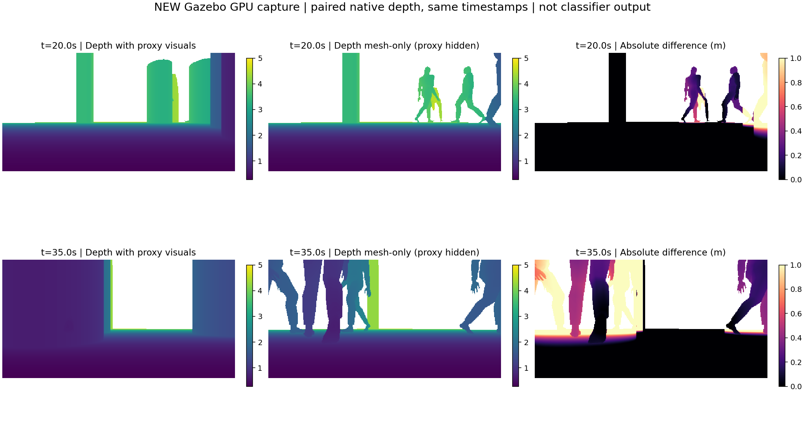
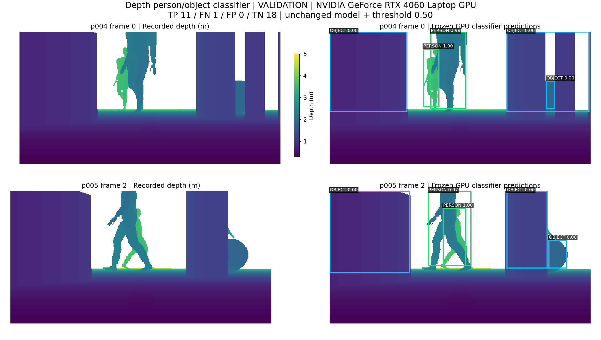
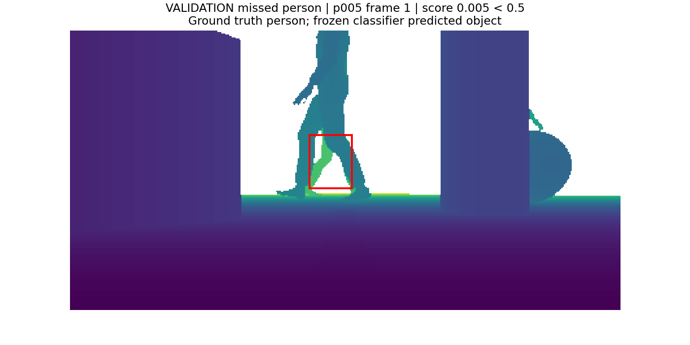

Kết quả chạy thật — 29/10/2026
Nhà xưởng · Mecanum · 6 người · RTX 4060. Giữ nguyên model và threshold.
Nav2: SUCCEEDEDĐích thật: XY 0.070 mClassifier validation: 11/12 người, 0/18 đồ vật nhầmCUDA tests: 10/10
1. Mô phỏng mới vừa chạy
Camera ghi thật từ lượt chạy mới, mặc định 4×. Đây là video của lượt đã hoàn tất; cửa sổ Gazebo riêng đang phát lại quỹ đạo nhẹ hơn.2. Depth mới: bật / ẩn proxy

Camera ON thấy hình trụ proxy; camera OFF thấy mesh người. Cùng timestamp, 424×240, đơn vị mét. Collision và LiDAR vẫn dùng proxy. Ảnh này không phải dự đoán classifier.
3. Classifier chạy lại trên validation đã ghi

Model depth_linear đã cố định, threshold 0.5. 11 TP, 1 FN, 0 FP, 18 TN; accuracy 96,7%. Chỉ phân loại các cụm geometry sẵn có; chưa tích hợp classifier vào Gazebo/ROS live và chưa phải đánh giá detector toàn ảnh.
Một người bị bỏ sót

Đây là trường hợp sai thật. Không điều chỉnh model/threshold theo kết quả này, không mở test.
Hiệu năng và phạm vi
Lượt vừa thu chạy đồng thời Nav2 + camera ON/OFF + MCAP + GUI: khoảng 0,32× thời gian thực. Phiên Gazebo đang mở sau đó chỉ xem lại tọa độ đã ghi, không chạy vật lý/Nav2/cảm biến, đo khoảng 1,0×.
Classifier inference vừa chạy mới bằng CUDA trên dữ liệu validation cũ; depth/camera ở mục 1–2 là dữ liệu mô phỏng mới. Không có ảnh AI sinh.
Metrics classifierThông tin depth